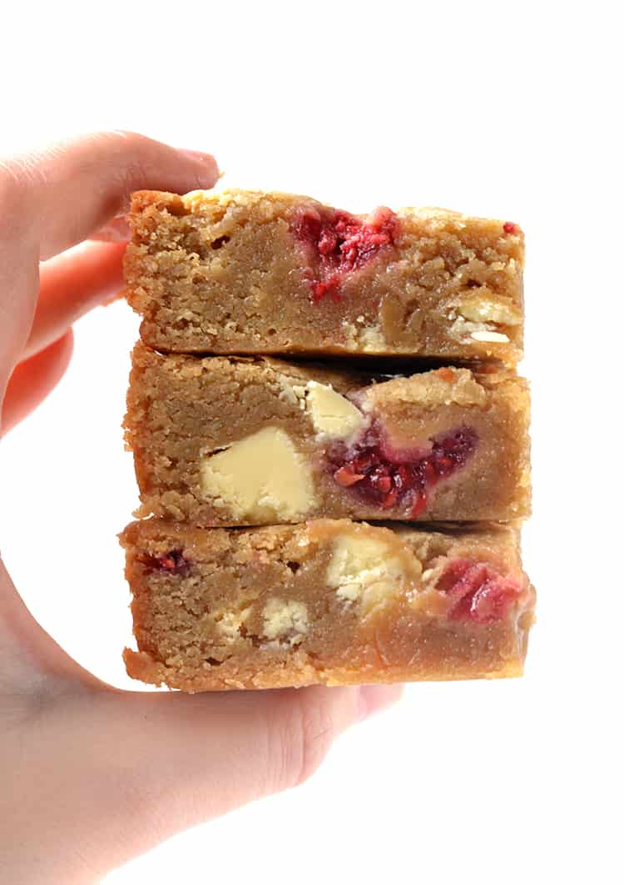

Blondies

Description
White chocolate and raspberry blondies
Ingredients
- 170g butter
- 225g brown sugar
- 2 teaspoons vanilla extract
- 1 large egg
- 210g plain flour
- 150g white chocolate chunks
- 50g fresh or frozen raspberries
Method
- Preheat oven to 180 C (350 F) standard / 160 C (320 F) fan-forced. Grease and line an 8-inch square baking pan with baking or parchment paper, ensuring two sides overhang.
- In a large mixing bowl, add melted butter and sugar and gently whisk together. Add the vanilla extract and egg and mix until combined.
- Stir in flour and white chocolate chunks. Fold in raspberries. Pour the batter in prepared pan, smooth the top and place in the oven.
- Bake blondies for approximately 30 minutes or until golden on the edges and a skewer inserted in the middle comes out clean. Leave in pan to cool completely. Cut into squares to serve.
Notes
- Fudge factor: Some reader feedback has been that these blondies are too fudgy and undercooked in the middle. That's just how I like them. But you can add 35 grams (1/4 cup) of extra flour for a more sturdy, cookie-like blondie.